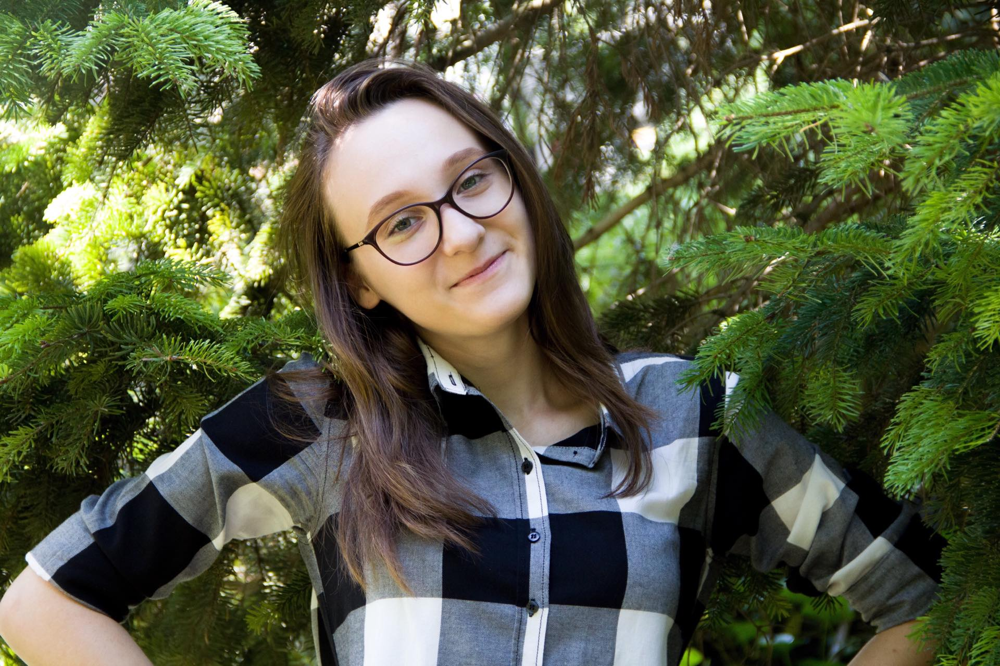

Mă numesc Haidău Maria Bianca și m-am născut pe data de 18 aprilie 2003 în Iași. La cei șaisprezece ani ai mei mă declar un copil fericit care nu iese prea mult din zona de confort, dar căruia îi plac provocările.
Învăț la Colegiul Național Emil Racoviță și pot să spun că îmi place aici pentru că simt cum mă dezvolt, simt cum unii profesori își dau silința să ne potolească setea de cunoaștere, dar în același timp, ne ajută să ne autocunoaștem prin proiecte sau diferite activități. Mă înțeleg bine cu colegii mei și sunt mereu acolo să îi ajut dacă îmi stă în putință.

Sunt perfecţionistă, nu îmi place să fac lucrurile de mântuială şi ţin la detalii. Am o memorie bună și țin minte detalii legate de comportamentul și atitudinea oamenilor, iar nu de lucurile materiale. Iert ușor, nu sunt genul de persoană care să stea prea mult timp supărată. Îmi plac gesturile draguţe și obiectele mici cu mare încărcătură emoţională. Sunt optimistă şi mă consider o persoană norocoasă din multe puncte de vedere. Sunt veselă în cea mai mare parte a timpului și pot să spun că am făcut un hobby din a-i face pe prietenii mei să zâmbească. Ador să îi văd pe cei din jurul meu fericiți pentru că mă motivează să fac lucuri bune și să împărtășesc mai multă iubire.
Ador oamenii inteligenţi, care au ceva de spus, oamenii care au o gândire inovativă și care văd binele chiar și acolo unde nu este. Îmi place foarte mult naturaleţea, mai ales cea din comportamentul oamenilor, și îmi place să petrec timpul cu persoane care simt că mă înțeleg și mă ascultă.
În timpul liber îmi place să ies cu bicicleta cu prietenii sau să ascult muzică. Muzica înseamnă foarte mult pentru mine pentru că ea îmi intensifică emoțiile pe care le am, bune sau rele, și tot ea îmi poate schimba starea într-una mai bună, motivându-mă.